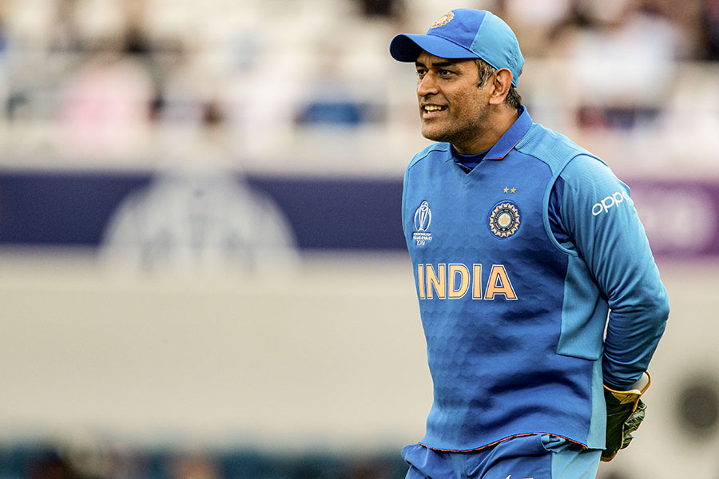
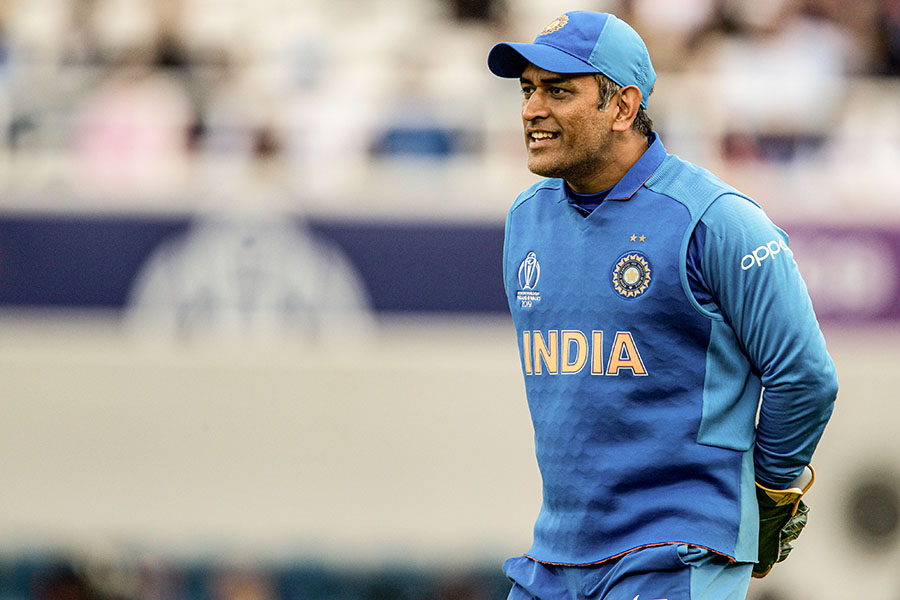
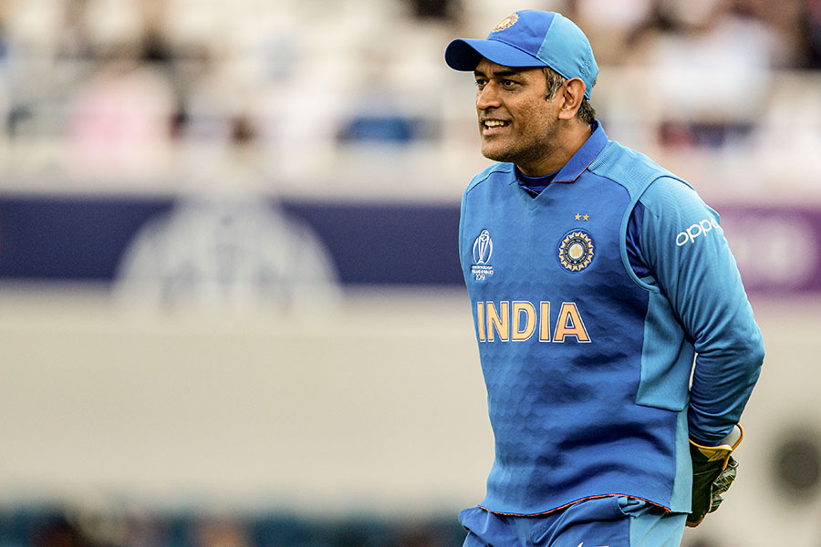
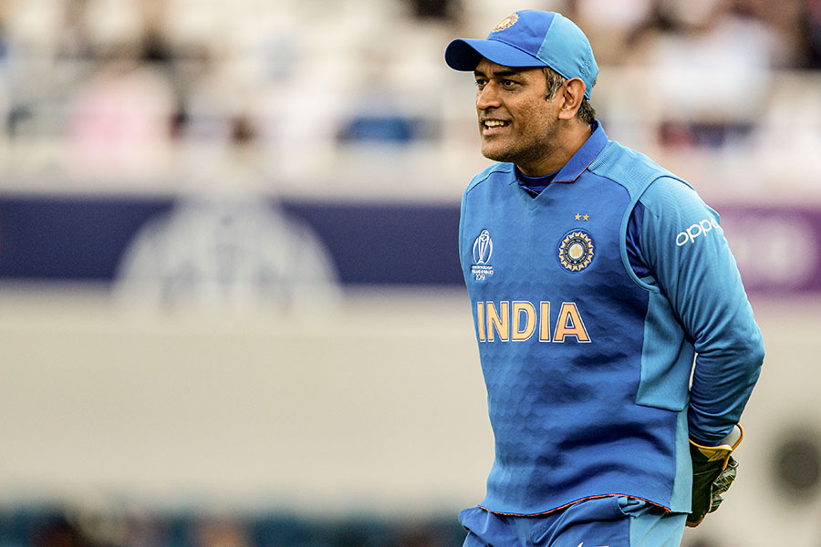

Mahendra Singh Dhoni born 7 July 1981 is an Indian professional cricketer who plays as a right handed batter and a wicket-keeper. Widely regarded as one of the most prolific wicket-keeper-batsmen and captains, he represented the Indian cricket team and was the captain of the side in limited-overs formats from 2007 to 2017 and in test cricket from 2008 to 2014. Dhoni has captained the most international matches and is the most successful Indian captain. He has led India to victory in the 2011 Cricket World Cup, the 2007 ICC World Twenty20 and the 2013 ICC Champions Trophy, the only captain to win three different limited overs tournaments. He also led the teams that won the Asia Cup in 2010, 2016 and was a member of the title winning squad in 2018.
Born in Ranchi, Dhoni made his first class debut for Bihar in 1999. He made his debut for the Indian cricket team on 23 December 2004 in an ODI against Bangladesh and played his first test a year later against Sri Lanka. In 2007, he became the captain of the ODI side before taking over in all formats by 2008. Dhoni retired from test cricket in 2014, but continued playing in limited overs cricket till 2019. He has scored 17,266 runs in international cricket including 10,000 plus runs at an average of more than 50 in ODIs.